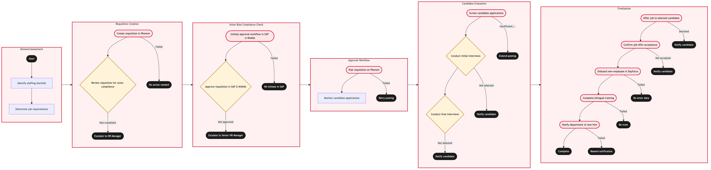

Updated 2026-08-21
Workforce Demand and Requisition Approval
Process flow
Click to zoom

Process steps
▼
Phase 1 — Demand Assessment
2 steps
| Step | Activity | Role | System | Input | Output | KPI | Dec | Exc | Pain point |
|---|---|---|---|---|---|---|---|---|---|
| 1.1 | Identify staffing shortfall | HR Analyst | DayforceB | Departmental performance data, workload projections | Staffing gap report | 24-hour turnaround time for demand assessment | N | N | Delays in identifying gaps can lead to operational disruptions. |
| 1.2 | Determine job requirements | HR Analyst | Microsoft 365C | Staffing gap report, job description templates | Detailed job requisition | 48-hour turnaround time for job requirement documentation | N | N | Inconsistent job descriptions can lead to misalignment with union contracts. |
▼
Phase 2 — Requisition Creation
2 steps
| Step | Activity | Role | System | Input | Output | KPI | Dec | Exc | Pain point |
|---|---|---|---|---|---|---|---|---|---|
| 2.1 | Create requisition in Phenom | Talent Acquisition Specialist | PhenomB | Detailed job requisition | Requisition created in Phenom | 4-hour turnaround time for requisition creation | N | Y | System downtime can delay requisition creation. |
| 2.2 | Review requisition for union compliance | Union Relations Officer | DayforceB | Requisition created in Phenom | Compliance report | 2-hour turnaround time for union review | Y | N | Complex union rules can lead to lengthy reviews. |
▼
Phase 3 — Union Rule Compliance Check
2 steps
| Step | Activity | Role | System | Input | Output | KPI | Dec | Exc | Pain point |
|---|---|---|---|---|---|---|---|---|---|
| 3.1 | Initiate approval workflow in SAP S/4HANA | HR Manager | SAP S/4HANAA | Compliance report | Approval request sent | 8-hour turnaround time for approval initiation | N | Y | System integration issues can delay approvals. |
| 3.2 | Approve requisition in SAP S/4HANA | HR Manager | SAP S/4HANAA | Approval request | Approved requisition | 1-hour turnaround time for approval | Y | N | Manual intervention required for complex approvals. |
▼
Phase 4 — Approval Workflow
2 steps
| Step | Activity | Role | System | Input | Output | KPI | Dec | Exc | Pain point |
|---|---|---|---|---|---|---|---|---|---|
| 4.1 | Post requisition on Phenom | Talent Acquisition Specialist | PhenomB | Approved requisition | Requisition posted | 2-hour turnaround time for posting | N | Y | Network issues can prevent posting. |
| 4.2 | Monitor candidate applications | Talent Acquisition Specialist | PhenomB | Posted requisition | Candidate applications | Continuous monitoring | N | N | High volume of applications can overwhelm the system. |
▼
Phase 5 — Candidate Evaluation
3 steps
| Step | Activity | Role | System | Input | Output | KPI | Dec | Exc | Pain point |
|---|---|---|---|---|---|---|---|---|---|
| 5.1 | Screen candidate applications | Talent Acquisition Specialist | PhenomB | Candidate applications | Shortlisted candidates | 48-hour turnaround time for screening | N | Y | Incomplete application data can delay the process. |
| 5.2 | Conduct initial interviews | Interviewer | Microsoft 365C | Shortlisted candidates | Interview notes | 1-week turnaround time for interviews | Y | N | Limited interview slots can delay the process. |
| 5.3 | Conduct final interviews | Final Interviewer | Microsoft 365C | Interview notes | Final selection report | 2-day turnaround time for final interviews | Y | N | Conflict resolution during interviews can delay the process. |
▼
Phase 6 — Finalization
5 steps
| Step | Activity | Role | System | Input | Output | KPI | Dec | Exc | Pain point |
|---|---|---|---|---|---|---|---|---|---|
| 6.1 | Offer job to selected candidate | Talent Acquisition Specialist | PhenomB | Final selection report | Job offer | 24-hour turnaround time for offering | N | Y | Candidate unavailability can delay the process. |
| 6.2 | Confirm job offer acceptance | Talent Acquisition Specialist | PhenomB | Job offer acceptance | Confirmed job offer | 24-hour turnaround time for confirmation | N | Y | Communication delays can affect offer acceptance timelines. |
| 6.3 | Onboard new employee in Dayforce | HR Onboarding Specialist | DayforceB | Confirmed job offer | Employee record created | 48-hour turnaround time for onboarding | N | Y | Data entry errors can delay the process. |
| 6.4 | Complete bilingual training | Bilingual Training Coordinator | Microsoft 365C | Employee record | Training completion certificate | 2-week turnaround time for training | N | Y | Language proficiency issues can delay the process. |
| 6.5 | Notify department of new hire | HR Analyst | Microsoft 365C | Training completion certificate | Notification sent to department | 24-hour turnaround time for notification | N | Y | Email system outages can delay notifications. |
Swim lanes
HR Analyst1.1 1.2 6.5
Talent Acquisition Specialist2.1 4.1 4.2 5.1 6.1 6.2
Union Relations Officer2.2
HR Manager3.1 3.2
Interviewer5.2
Final Interviewer5.3
HR Onboarding Specialist6.3
Bilingual Training Coordinator6.4
Systems touched
DayforceBMicrosoft 365CPhenomBSAP S/4HANAA
Key performance indicators
- 24-hour turnaround time for demand assessment
- 8-hour turnaround time for approval initiation
- 1-week turnaround time for interviews
- 2-week turnaround time for training
- 24-hour turnaround time for notification
Risks and control points
- System downtime affecting requisition creation and posting
- Complex union rules leading to lengthy reviews
- High volume of applications overwhelming the system
- Data entry errors during onboarding
- Language proficiency issues delaying bilingual training
Air Canada Process Wiki — process and systems reference compiled from public sources
for IT Application Management and User Support pre-sales discovery.
Built 2026-08-21. Every system carries an evidence tier: tier C is an industry pattern and tier U is an open
question, and neither should be asserted as fact about Air Canada without confirmation in discovery.
Not affiliated with or endorsed by Air Canada. Air Canada, Aeroplan and Altitude are trademarks of Air Canada.